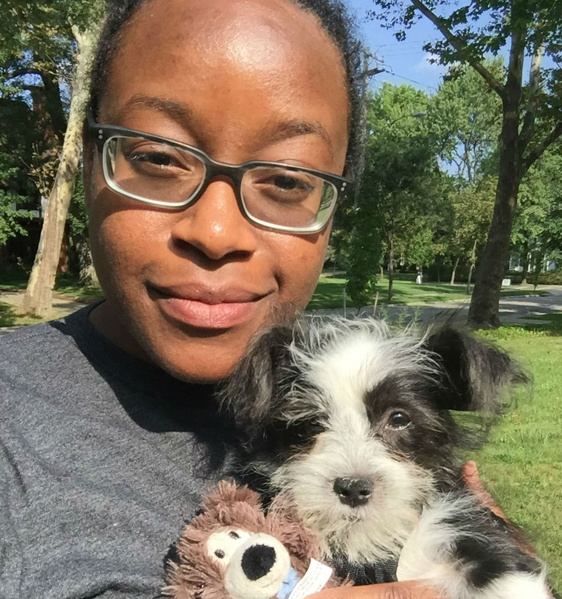

What I do.
Most Recent — Design & Development


Design

Taking a design and duplicating it using code is like solving a puzzle, and puzzles are fun! Well, at least I think so.
HTML
CSS/SASS
JS/ jQuery
Wordpress
Drupal
Bootstrap
Nunjucks
git
Bitbucket
Sketch
Photoshop
Twig
Let's work together
and bring designs to life.
I'm currently available and would love to chat.
Get In Touch